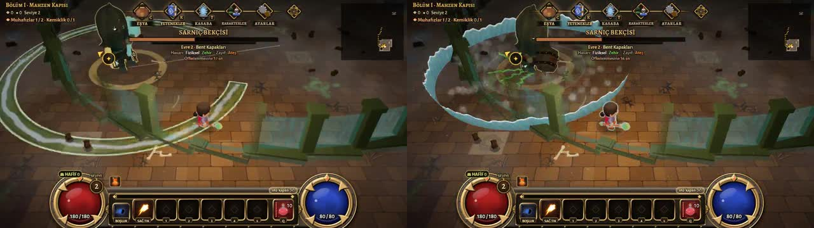
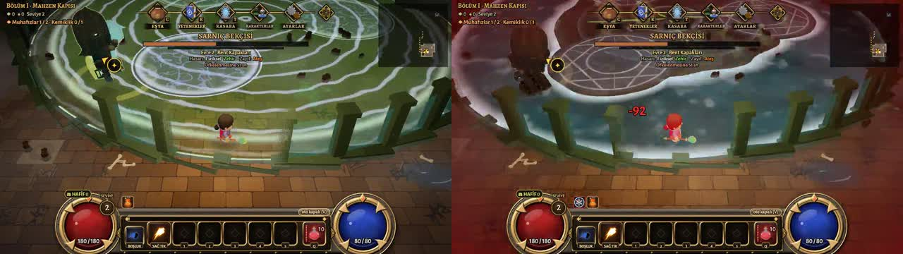

Riftborn — bossları izle
Her boss için gerçek bir dövüş, oyunun kendi sesiyle. Kahraman ölmüyor ve saldırmıyor; boss bütün hamlelerini ve evrelerini gösteriyor. Saniyeye basınca video o ana gider. Sarnıç Bekçisi ve Ser Aldric var; diğerleri sırayla eklenecek.
1. Sarnıç Bekçisi
Bölüm I (Mahzen Kapısı), ilk ara boss · iki evre: Sarnıç → Bent Kapakları (canı yarıya inince) · 40 sn
Önce
Sonra (dal claude/rb-sarnic, oyuna girmedi)
Ne değişti (saniyeler "Sonra" videosunda)
Kural: yerdeki çizim yalnız uyarı. Uyarıdan sonra boss gerçek saldırıyı yapıyor; hasarı o efekt veriyor, uyarılan yere, göründüğü anda. Hasar sayıları aynı.
- Sel BaskınıFlood SurgeÖnce: yere çizilen halka büyüyor, sonra hiçbir şey gelmiyordu (vuran çizgiydi). Şimdi: yeşil halka uyarır → boss çekiçle yere vurur → köpüklü bir su duvarı dışa doğru akar, boşluk yerinde su yok; su sana değdiği anda vurur. Ses: taş gümlemesi + su patlaması + akan dalga.
- Evre değişimi: Bent KapaklarıBoss kükrer, çevresinden su fışkırır, ardından ilk Sel Baskını gelir. Ses: kırılan taş kapaklar + alçak gök gürültüsü + su.
- Yükselen SuRising WaterUyarı: bütün arena + mavi adacıklar. Sonra su arenanın kenarından içeri doğru akarak gelir, adacıklar kuru kalır; su sana ulaştığı an vurur, sonra su yerde durur (içinde durmak az acıtır). Ses: uzun akan su + derin uğultu.
- Çekiç DarbesiHammer SmashZaten gerçek vuruşu vardı (çekiç, çatlak, şok halkası); şimdi su da sıçrıyor. Ses: ateş sesi yerine kaya darbesi + su + moloz.
- Zincir SüpürmeChain SweepGerçek savuruşu vardı. Ses: zincir savurma havası + zincir şakırtısı + taş + ıslak şaplak.
- Boğa HücumuBull RushGerçek koşu. Ses: kalkışta bağırış (önce hiç çalmıyordu), koşarken su şıpırtılı ağır adımlar, çarpınca kaya + su.
- Kara SuBlack Water · bu videoda gelmediUyarı dairelerinden kara su fışkırır; kalan alan yerde gerçek kara su birikintisi (önce yalnız yer deseniydi). Ses: kalın su patlaması.
- Boss'un kendi sesiÖnce hiç yoktu. Şimdi tek bir derin, ıslak yaratık sesi: dövüş başında ve evre değişiminde kükreme, her vuruş hazırlığında homurtu, büyük darbe yiyince acı homurtusu, ölünce çığlık, aralarda ağır nefes.
- Sana isabet sesiÖnce sıradan canavar yumruğu (
impactPunch_*,bossimp). Şimdi bu boss'a özel taş + su darbesi; suda dururken tıkırtı yerine hafif su şıpırtısı.
Kontrol kareleri
Solda Sel Baskını uyarısı (yeşil halka, boşluk çizgisi), sağda 1 sn sonra su duvarı yolda. Altta Yükselen Su: uyarı, sonra kenardan gelen su.


Önceki video: hamleler ve sesler (eski not)
Hamleler (videodaki sırayla)
- Çekiç DarbesiHammer Smash · yere daireHamlenin sesi:
s5/sfire-1…6(ateş savurması / tutuşma) +b2/bossimp-1…4(boss vuruşu). Su boss'unda ateş sesi çalıyor. - Boğa HücumuBull Rush · koşarak çarpmaKalkışta:
rp-cloth(kumaş hışırtısı) +s2/w1-1…4(hafif savurma havası, katana) +s5/stroll-1…4. Çarpınca:s5/srock-1…6+b2/bossimp-1…4. Boss'un hücum bağırışı çalmıyor. - Zincir SüpürmeChain Sweep · önüne yelpazeHamlenin sesi:
s5/srock-1…6+b2/bossimp-1…4. Yalnız kahraman yakındayken yapıyor. - Çamursludge · yere daireHamlenin sesi:
s5/sfire-1…6(ateş) +b2/bossimp-1…4. - Evre değişimi: Bent KapaklarıSes:
s5/srock-1…6+s5/stroll-1…4+b2/bossimp-1…4+impactPunch_heavy_*. - Sel BaskınıFlood Surge · dışa yayılan halkaHamlenin sesi:
s5/sfire-1…6(ateş) +b2/bossimp-1…4. - Yükselen SuRising Water · zemin su basar, adacığa çıkHamlenin sesi:
s5/sfire-1…6(ateş) +b2/bossimp-1…4.
Her vuruşta duyulan ortak sesler
Kahraman vurulunca: impactPunch_heavy_*, impactSoft_heavy_*, impactPunch_medium_*, kısa bir üretilmiş gürültü (dosyası yok) ve kahramanın inlemesi b2/hurtg-1…4.
Suda / çamurda dururken yarım saniyede bir impactPunch_medium_* (küçük hasar tıkırtısı).
Arkada: music/cave-ambience.mp3 (mağara uğultusu); bu dövüşte ayrı boss müziği yok.
Dosyalar oyunda games/12-riftborn/public/sfx/ altında. "…" aynı sesin birkaç çeşidi: oyun her seferinde birini seçiyor.
2. Ser Aldric (1. zindan son bossu)
Mahzen Kapısı'nın son dövüşü · üç evre: Nöbet → Mühürleme Ayinleri (%66) → Son Yemin (%33) · müzik "Fantasy Choir 2" · 62 sn · dal claude/rb-aldric, oyuna girmedi
Ne değişti
Önce: yerdeki çizimin kendisi vuruyordu (dolduğu anda, ya da kayan bant). Şimdi çizim yalnız uyarı; her vuruşu görünen bir şey yapıyor (ışık kılıcı, ışık hilali, gökten düşen ışık kılıçları, kutsal ateş, taş-toz dalgası, ışık perdesi) ve vuruş o şey sana ulaştığı anda, yalnız uyarılan alanda geliyor. Top biçimli hiçbir şey yok. Kendi sesleri eklendi: hazırlıkta efor sesi, acı sesi (kendi vuruşundan sonraki 0,5 sn'de asla), ölüm çığlığı, sana isabette kendi ağır kılıç darbesi; kahramanın "ah"ı yine çalıyor. Müziği artık "Fantasy Choir 2"; Yarığın Kalbi ortak boss müziğine döndü. Hasar ve hamle sayıları aynı.
- Evre değişimiThe Watch → Sealing Rites (%66) → The Last Oath (%33)Kılıcını yere saplar, başını geri atıp yemini haykırır (kendi kükremesi; altında kutsal çan gümlemesi). Dövüşün başında da aynı kükreme var (videodan önce).
- Süpüren SavunmaSweeping GuardKoni yalnız uyarı. Kılıç savrulunca ışıktan bir kılıç ağzı koniyi bir yandan öbürüne süpürür; sana değdiği an vurur. Ses: zırh gıcırtısı, savuruş, ağır kılıç darbesi.
- Kalkan Duvarı → Karşı DarbeShield Wall → Shield RiposteKalkanı diker (önden vuruşları keser), sonra saplar: saplamadan kopan ışık hilali koninin kenarına yuvarlanır, sana ulaşınca vurur.
- Mühür GlifleriSealing GlyphsDaireler uyarı. Son anda her daireye gökten ışık kılıcı düşer, saplanınca kutsal ateş halkası kenara koşar ve vurur; kılıç dikili kalır, daire birkaç saniye kutsal ateşle yanar (yanma hasarı bu ateşten). Ses: düşen kılıç uğultusu, kutsal çan patlaması, yanma çıtırtısı.
- Kalkan HücumuShield BashKalkanın arkasında koşar; çarpan onun gövdesi. Ses: ağır adımlar, çarpma.
- Yemin DarbesiOath StrikeSıçrar, kılıç aşağıda iner: altındaysan iniş vurur, kenardaysan taş-toz şok dalgası daireyi doldurup vurur.
- Mühür TaşlarıSeal StonesAltın çizgi uyarı. İki taş uyanır, kutsal ışık perdesi bir taştan öbürüne koşar; önü geçtiği an vurur.
- Kapının MührüSeal of the Gate (son evre)Açıklığı olan kutsal ateş duvarı ondan dışa yuvarlanır; açıklıkta dur ya da içinden kaç. Vuran duvarın kendisi.
- Bu videoda gelmeyenlerÖlüleri Çağır (zombiler; hasarsız) ve yalnız Kâbus'ta gelen Kapının Koruması (kenarda dört daire: Mühür Glifleri gibi ışık kılıçları ve kutsal ateş). Ölüm: çığlık + zırhın çöküşü (ayrı denemede çaldı).